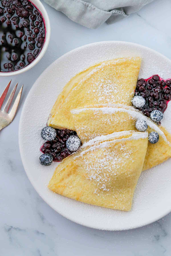

Double Chocolate Cookies

My daughter learned to make these cookies at a baking camp at Zingermanns and has tweaked the recipe to fit the taste buds of her siblings. They are extremely sugary so the salt helps to balance it. Note, these cookies are best eaten very quickly.
Recipe Ingredients
a.Unsalted butter
b.Granulated Sugar
c.Packed light or dark brown sugar
d.Large egg
e.Pure vanilla extract
f.Semi-sweet chocolate chunks (melted)
g.All-purpose flour
h.Natural unsweetened cocoa powder
i.Baking soda
j.Salt
k.Semi-sweet chocolate chunks
Recipe Steps
In a mixing bowl cream together the butter, granulated sugar, and brown sugar
Add the egg and vanilla extract and beat well
Add the melted chocolate
In a separate bowl combine the flour, baking soda, cocoa powder and salt
Combine the wet and dry ingredients
Add the unmelted chocolate chunks.
Form 15 cookies and place on a baking sheet.
Cooke for 12 to 13 minutes at 350 degrees.
Chocolate Chip Banana Bread

This is a tried-and-tested recipe that I have used numerous times for making the perfect chocolate chip banana bread! Not only does it help utilize the bananas that have slowly overripened at the back of the fridge, it ends up creating an incredibly delicious, and relatively healthy, dessert.
Recipe Ingredients
a. 1/2 cup butter, softened
b. 1 cup sugar
c. 2 eggs
d. 1 cup mashed ripe bananas (about 2 medium)
e. 1/4 cup 2% milk
f. 1 teaspoon vanilla extract
g. 2 cups all-purpose flour
h. 1 teaspoon baking soda
i. 1/2 teaspoon salt
j. 1 cup (6 ounces) semisweet chocolate chips
Recipe Steps
In a large bowl, cream butter and sugar until light and fluffy. Beat in the eggs, bananas, milk and vanilla. Combine the flour, baking soda and salt; stir into creamed mixture just until moistened. Fold in chocolate chips.
Transfer to a greased 9x5-in. loaf pan. Bake at 350° for 60-70 minutes or until a toothpick inserted in the center comes out clean. Cool for 10 minutes before removing from pan to a wire rack to cool completely.
Swedish Pancakes
These pancakes are a family favorite and are a great way to start the day! They are thin and crepe-like, and are best served with a generous helping of lingonberry jam and a dollop of whipped cream.
Recipe Ingredients
a. 1 cup flour
b. 1/2 teaspoon salt
c. 1 tablespoon sugar
d. 2 eggs
e. 1 1/2 cups milk
f. 1 tablespoon melted butter
Recipe Steps
Combine all ingredients in a blender and blend until smooth. Heat a lightly greased 6-in. skillet; add 2 tablespoons batter. Lift and tilt pan to evenly coat bottom. Cook until top appears dry; turn and cook 15-20 seconds longer. Remove to a wire rack. Repeat with remaining batter. When cool, stack pancakes with waxed paper or paper towels in between. If desired, roll up and freeze in a freezer container. To use frozen pancakes, thaw in the refrigerator overnight. Microwave, uncovered, on high for 30-60 seconds or until heated through.